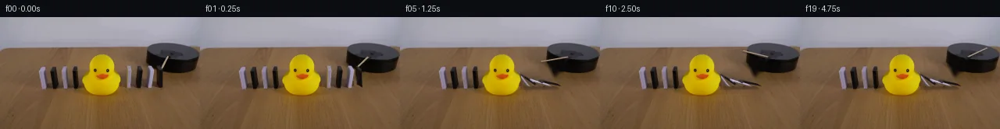

![首帧]()

Round 00
2026-11-05T01:41:20.849167+00:00像素候选变化代码 +336/−0inspection 更新
pixels a5b7199c5e39446c · code ac308c75c7288a3a
查看本轮 generate.py 真实 diff
--- previous/generate.py
+++ current/generate.py
@@ -0,0 +1,336 @@
+"""PixelWorld continuation using local source textures and projected rigid prisms.
+No external scene assets, models, render engines, or image viewing tools.
+"""
+from pathlib import Path
+import json, math
+import numpy as np
+import cv2
+from PIL import Image, ImageDraw
+from scipy import ndimage
+import artifact_io
+
+ROOT = Path(__file__).resolve().parent
+W, H, S = 256, 144, 4
+SRC = np.asarray(Image.open(ROOT/'first_frame.png').convert('RGB'))
+
+def polygon_mask(points, scale=1):
+ mask = np.zeros((H*scale, W*scale), np.uint8)
+ points = np.asarray(points, float)
+ cv2.fillConvexPoly(mask, np.round((points+.5)*scale-.5).astype(np.int32), 255)
+ return mask
+
+def blend(a, b, mask):
+ alpha = mask.astype(np.float32)/255
+ return a*(1-alpha[...,None])+b*alpha[...,None]
+
+# Original stick silhouette. Inpaint before sampling original domino textures,
+# since the actuator end overlaps the top of the first black block.
+STICK_MASK = polygon_mask([(213.4,49.0),(216.3,49.8),(209.0,64.5),
+ (208.1,66.3),(205.9,66.4),(206.4,62.1)])
+STICK_MASK = cv2.dilate(STICK_MASK, np.ones((2,2),np.uint8))
+ROD_FREE = cv2.inpaint(SRC, STICK_MASK, 3, cv2.INPAINT_TELEA)
+
+# Domino prisms ordered from the duck out to the actuator. Vectors are projected
+# physical width and height; the hinge is at the bottom edge toward the duck.
+BLOCKS = [
+ dict(name='inner white', A=(162.7,88.0), V=(3.6,2.0), height=25., shear=1., d=1.3,
+ color='white', erase=[(161,62),(167,62),(169,67),(169,91),(161,93),(160,83)]),
+ dict(name='inner black', A=(174.1,87.0), V=(5.4,3.4), height=24., shear=2.1,d=1.8,
+ color='black', erase=[(173,62),(181,62),(184,69),(183,91),(172,94),(170,87)]),
+ dict(name='outer white', A=(190.,87.), V=(4.5,3.1), height=24., shear=1.2,d=1.5,
+ color='white', erase=[(188,62),(194,61),(199,68),(198,91),(186,94),(184,86),(186,76)]),
+ dict(name='outer black', A=(202.,86.7), V=(5.2,3.4),height=24.,shear=-.6,d=1.7,
+ color='black', erase=[(199,61),(207,61),(209,68),(211,92),(199,94),(197,86),(199,73)]),
+]
+
+def vertices(block, theta):
+ a = np.array(block['A'],float)
+ v = np.array(block['V'],float)
+ d, height, shear = block['d'], block['height'], block['shear']
+ c, s = math.cos(theta), math.sin(theta)
+ hinge = a-np.array([d,0.])
+ thickness = np.array([d*c, -d*s])
+ vertical = np.array([-height*s+shear*c, -height*c])
+ back = hinge
+ front = hinge+thickness
+ return dict(front=np.array([front+vertical,front+vertical+v,front+v,front]),
+ side=np.array([back,front,front+vertical,back+vertical]),
+ top=np.array([back+vertical,back+vertical+v,front+vertical+v,front+vertical]),
+ foot=np.array([back,back+v,front+v,front]),
+ back=back, topcenter=front+vertical+v*.5)
+
+ERASE_ALL = np.zeros((H,W),np.uint8)
+for b in BLOCKS:
+ b['erase_mask'] = polygon_mask(b['erase'])
+ ERASE_ALL = np.maximum(ERASE_ALL,b['erase_mask'])
+PLATE = cv2.inpaint(ROD_FREE, ERASE_ALL, 5, cv2.INPAINT_TELEA)
+# Reconstruct the small platform area hidden by dominoes, from nearby pixels
+# on the same front surface. The remaining plate uses local texture inpainting.
+edge_y=np.array([43,56,60,63,66,69,71],float)
+edge_x=np.array([187,188,191,195,199,204,215],float)
+for y in range(61,72):
+ xedge = float(np.interp(y,edge_y,edge_x))
+ for x in range(185,213):
+ if ERASE_ALL[y,x] and x>=xedge:
+ PLATE[y,x] = ROD_FREE[y,min(x+18,246)]
+
+# Pixel source textures, straightened from the original upright parallelograms.
+# Each texture is gently clipped to remove antialiased wood/background pixels.
+for b in BLOCKS:
+ quad=vertices(b,0.)['front'].astype(np.float32)
+ target=np.array([[0,0],[31,0],[31,127],[0,127]],np.float32)
+ hom=cv2.getPerspectiveTransform(quad,target)
+ tex=cv2.warpPerspective(ROD_FREE,hom,(32,128),flags=cv2.INTER_LINEAR,
+ borderMode=cv2.BORDER_REFLECT).astype(np.float32)
+ if b['color']=='white':
+ # Adjacent antialias pixels contain warm table colors; source-based
+ # row medians keep the shaded lavender/cream surface coherent.
… diff truncated; 249 more lines …